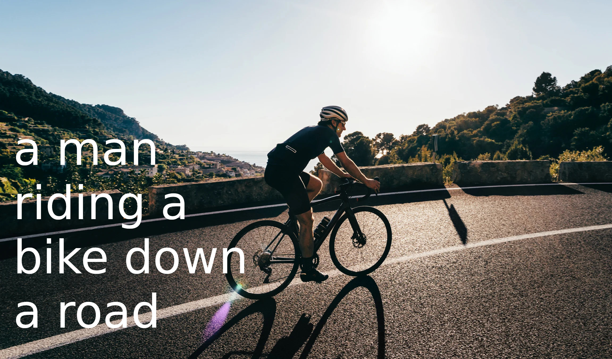

Stock Market Data Analysis
Data scrapper using python. Analysis in progress.
As a physics and mathematics graduate with a strong interest in data science, I have completed a variety of online and offline courses to develop my skills in statistical analysis, programming languages such as Python and R, and data visualization tools such as Tableau and Power BI. I am eager to apply my skills to a data science role and continue learning and growing in the field.
Welcome to my portfolio. Here you’ll find a selection of my work.
Explore my projects to learn more about what I do.
Data scrapper using python. Analysis in progress.

AI created from pre-trained model.
Checking how people reacts on Elon Musk's tweets.
Predicting area of forest burnt using Support Vector Machines and Neural Networks.
Using Convolution Neural Networks.
Using different clustering algorithms to determine types of customers.